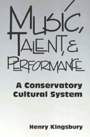

An anthropologist's unusual ethnography of an American conservatory
An anthropologist's unusual ethnography of an American conservatory


 An anthropologist's unusual ethnography of an American conservatory
An anthropologist's unusual ethnography of an American conservatory

|  |
Music, Talent, and PerformanceA Conservatory Cultural SystemHenry Kingsburypaper EAN: 978-1-56639-891-6 (ISBN: 1-56639-891-6) |
"[This] is more than a mere ethnography of a specialized institution... it goes beyond an examination of social organization and music, delving into the semiotics of esthetics and politics. Even more than that, it raises some basic questions of methodology.... Kingsbury succeeds in expanding the reader's perceptions of music and culture while providing a tantalizing glimpse of one essential type of musical institution found in American society."
—Laurence D. Loeb, American Anthropologist
A provocative, perceptive study of the cultural dynamics of classical music in American society, Music, Talent, and Performance describes music as a metaphor of the society in which it takes place.
Author Henry Kingsbury, a conservatory-trained pianist and music educator turned anthropologist forgoes the traditional ethnomusicologist approach of looking at a non-Western musical culture to focus on the "field" of an American conservatory. The result is a penetrating look at the distinction between teaching music and the nurturing of musicality. Kingsbury offers an innovative anthropological analysis of the western notion of "talent" and its cultural character, noting that many non-western societies have no such concept. Furthermore, he examines various contexts in which music is produced, experienced, and evaluated. His discussion includes the dynamics of orchestra rehearsals in the conservatory, "master class" lessons with a distinguished performer-pedagogue, the ritual characteristics of solo recitals, and an interpretive analysis of stage fright.
Ultimately, Kingsbury argues that music "is highly shifting and indeterminate in meaning, "a concept that has important implications for all interpreters of culture and for the artists themselves.
Excerpt available at www.temple.edu/tempress
"Kingsbury has created an enjoyable and enlightening work. Music, Talent, and Performance is liberally spiced with anecdotes and examples that are pertinent to the points being made and that enhance the human interest and flow of the text as well.... Moreover, the greatest value of this book lies in the fact that it directs all of us, as teachers and students, to examine our own music education systems so that we can understand better the sociocultural implications of the circumstances and contexts in which we and our students are living, working, and learning."
—Paul Haack, Music Educator's Journal
"The efforts ethnomusicologists have expended in defining our field as the study of all music from the perspectives of cultural anthropology is inversely proportional to our effort to apply these perspectives to Western classical music. If this book did little else but fill this gap between theory and practice, it would be welcome; fortunately, it does much more... [This] account is richly textured, perspicacious, well written, and full of dry wit. Its pleasures extend beyond the 'local knowledge' they portray to provide a model style of 'music as a cultural system'."
—Timothy Rice, American Ethnologist
Acknowledgments
1. Social Context and Absolute Music
2. The Conservatory
3. Cream Rises
4. Lessons with the Master
5. A Song in a Strange Land
6. A Cultural System
Notes
References Cited
Index
Henry Kingsbury is a performing pianist and a Research Associate in the Department of Anthropology at Boston University.
Sociology
American Studies
Anthropology
© 2015 Temple University. All Rights Reserved. This page: http://www.temple.edu/tempress/titles/529_reg.html.